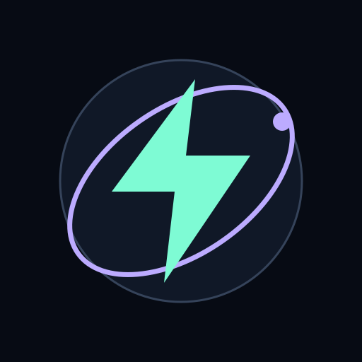

↓ Download
Mbps
Sustained average

OrbitNETWORK OBSERVATORYYou’re offline. View saved flights; reconnect to test.
An update is ready. Finish your test, close all Orbit windows, then reopen.
SIGNAL. WITHOUT THE NOISE.
Ready for takeoff
0–1,000 Mbps
T + 00 sNETWORK FLIGHT DECK
Sustained speed. Real-world latency.
High data use · up to 8 GB
Sustained average
Sustained average
Idle HTTP RTT
Consecutive variation
Choose a route and launch a sustained test.
Launch a test to record bandwidth and latency on your route.
Awaiting a test
Your next flight, plotted in real time.
Automatic · lowest measured HTTP RTT
Median loaded RTT compared with idle.
No samples recorded
No measured samples yet
Live metadata · separate from saved flights
Identifying your public connection…
Your connection, over time.
| Flight | Route | ↓ Mbps | ↑ Mbps | Ping / jitter | Trace | Status | Inspect |
|---|
Completed, interrupted and cancelled tests appear here.
Saved in this browser. Export a copy to keep your records.